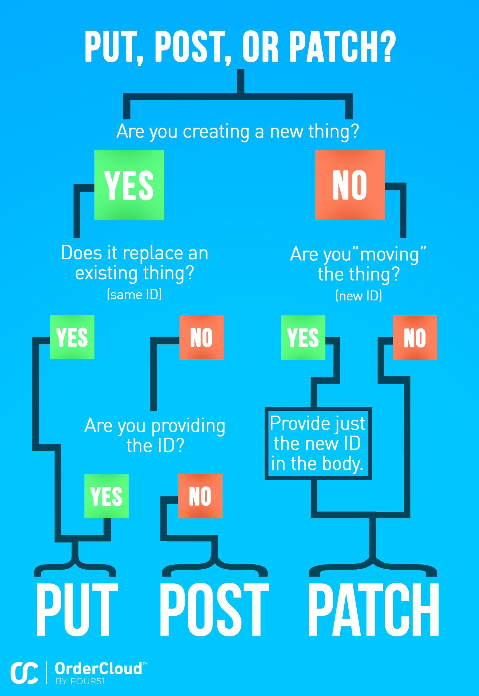

Here’s a question we hear often:
To update an existing resource, when should I use `PUT` and when should I use ``PATCH``?
TL;DR Always use PATCH.
PATCH has several distinct advantages over PUT when it comes to updating things:
PUT requires sending the entire object, hence a larger payload over the network. With PATCH, if you only want to change one or a few fields, you only need to send those fields.- You often do not have the entire object available to send, in which case
PUT requires that you first do a GET. With PATCH, all you need is the object’s ID, and you can often avoid the extra API call.
- In some cases,
PUT can have unintended side-effects related to properties you don’t want to change. For example, some properties have default values, often inherited from some parent object, that can be overwritten. When you do a GET on such a resource, you’ll get the default if it hasn’t been overwritten. If you then change some other property and do a PUT, you’re unintentionally overriding the inherited value with an explicit one. Now if the default value on the parent changes, that change won’t flow to the child as expected.
- If multiple users can modify the same resources, you could run into concurrency issues with
PUT. For example, suppose user A wants to modify a product’s quantity multiplier while user B wants to modify the same product’s description. Both users have done a GET and have the product’s JSON representation and modify it. If user A PUTs their change first, then user B will inadvertently revert the quantity multiplier change when they send their PUT. With PATCH, user A can send only the quantity multiplier change and user B can send just the updated description, and they are at no risk of a conflict.
All these warnings of great peril beg the question: When should you use PUT?
These are the situations where using PUT makes sense:
- You want to create a new resource, and you are providing the ID. Note that you need only provide that ID in the URI. In REST terms, you’re basically saying “I have this new object and I know where I want to put it.”
Conversely, use POST when you want the ID to be auto-generated by the platform, i.e. you want us to decide where to “put” it.)
- You want to completely replace an object with another. In other words, an object has the same ID (location), but in real world terms it is a different thing. This is a rare case.
- The object does not have an ID, rather its identity is comprised of other values. These objects typically represent relationships; assignments are a good example. You usually don’t even have to remember this rule because
PUT is often the only verb available for writing to such endpoints.
PUT actually has a few nice qualities when used in the above scenarios:
PUT is idempotent, i.e. you shouldn’t need to check if it has already been called, because calling it a second time will leave the resource in exactly the same state as calling it the first time. (POST, on the other hand, generally creates a new resource with each successive call.)- You generally don’t have to worry about checking for existence. For example, if you want to assign a user to a group, you don’t need to worry about creating a duplicate assignment - just
PUT the assignment and it will either create a new one or overwrite the existing one.
Summary
Use POST when… |
Use PUT when… |
Use PATCH when… |
| - You want to create a new resource where WE (the platform) are generating the ID. The new ID will be returned in the response body (as part of the full object), and the URI of the new resource will be returned in the Location response header. |
- You want to create a new resource where YOU are providing the ID, use PUT. (No need to include the ID in the request body; it’s in the URI.) |
- You want to update an existing resource. |
|
- You want to completely replace a resource with another (same ID), use PUT. This is not common. - You want to update an existing resource. |
- You want to “move” a resource. The old ID goes in the URI; the new one in the request body. |
In case you are a more visual thinker, here is an infographic that can help you make the right decision:
